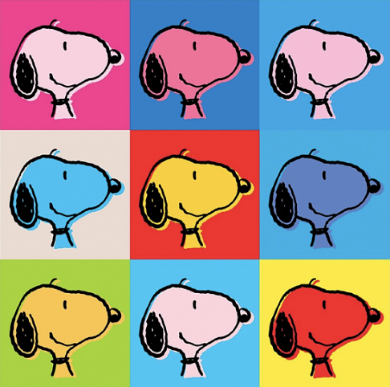
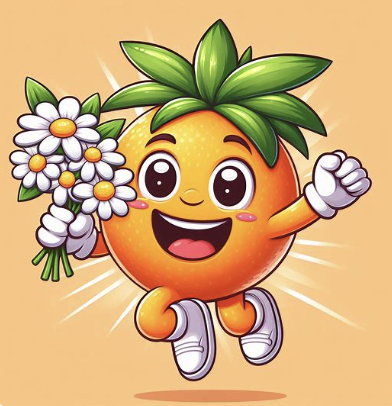
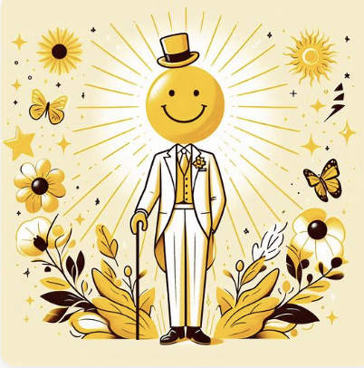
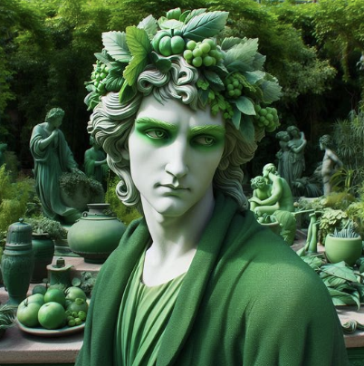
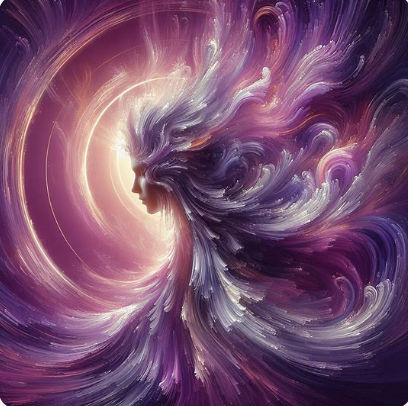
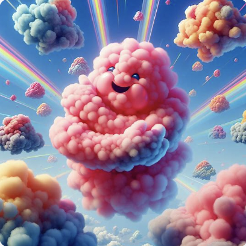

Colors as Emotions + Characters
I recently re-watched (what I believe to be) one of Disney’s best movies, Inside Out, because they announced that a sequel will be coming out this summer! While I don’t yet know the plot of the new one, the original film follows Riley, a young girl who moves to a new city and finds herself overcome with different emotions; each of which is represented by a little personified character that corresponds to a specific color. For example, her anger is depicted a pissed-off, red man, and her sadness is portrayed by a depressed middle-aged, blue woman. See below for the full range of Riley’s emotions in the first Inside Out.

I realized that some of these associations, like linking yellow to happiness, green to disgust, or blue to sadness is something that was never explicitly taught to me. Rather, it seems to be a subconscious linking to which most people subscribe– it just feels right. Additionally, phrases that reinforce such tropes, such as “I’m so mad I’m seeing red,” or “I’m so blue and miserable,” are key in reminding us of these ways we connect colors and emotions.
How does Co-Pilot feel about these connections?
With all that being said, I wanted to take to Microsoft Co-Pilot, which features a Dalle-3 integration– or the ability to generate images– to see if the software was familiar with these associations. Below are my findings from this first iteration of exploring.
Prompt: Please create an image of the color ____ personified.
Red
Wow, so Co-Pilot is certainly aware of the link between red and anger! This image is significantly more detailed than I anticipated, too, so I’m wondering if that is due to the strength of the emotion of for some other reason? We will have to see as we go with other colors.
Orange

Orange is less strongly associated with a given emotion, so I think that is why Co-Pilot got kind of rogue and literally made a physical orange here. Maybe it’s just putting orange in the happiness category, but some sources say the color represents warmth, giving, and extroversion, so that could be why the little cartoon is holding flowers? Perhaps to give to someone?
Yellow

Like red, the yellow depiction is spot on, and I do think that the softness/intensity of the images is linked to the sort of grittiness inherent in each respective emotion. This picture is much more cartoony and softer, likely because happiness is a softer, more upbeat emotion at its peak. Oppositely, the red photo is much more intense and dark, as that is what anger is in its most extreme form.
Green

This might be my favorite so far, because while green implied disgust in Inside Out, I most often associate it with envy. This “green-eyed monster” perfectly emulates that, and I like how the execution is closer to a middle ground on intensity, as that pairs well with the strength of the emotion. If envy got to be too much, it would turn to hatred, which transcends into the realm of anger, which was represented in a more severe manner.
Blue
Okay, this one was kind of disappointing and vague. The rain might associate the color with the emotion of sadness, but there is not much else that does this. The figure could be called lonely, but every other image has only had one character present too, so this isn’t a new case. The heart seems hopeful and fulfilled, which does not feel cohesive with the sadness emotion. Perhaps this image more accurately represents melancholy, where someone can be upset because they feel too much in general?
Purple

Similar to green, I actually prefer Co-Pilot’s interpretation of purple as an emotion to the one used in Inside Out. Historically, purple has always been associated with royalty and regality, and this image seems to lean in that direction. The being seems to have the status of some higher power, and I personally would not question this character’s sovereignty. It also follows the pattern of making the image more serious when the emotion/affect is more intense; royalty and power are significant themes, and I think they are appropriately represented here. Well done, Co-Pilot!
Pink

Aww. In my last color prompt, I decided to go off-script from the classic ROYGBIV and ask about pink, which is associated with sweetness, childhood, and charm. I think this final image perfectly embodied that, especially given the character’s precious face, the rainbows across the background, and the cotton-candy-cloud-like textures. It followed the pattern mentioned above, and was effective in its linking of pink to a distinct yet suitable character.
Conclusion
After walking through this exploration, it is clear that Co-Pilot grasps a solid understanding of the connections we make as humans between colors and emotions. I really liked its tendency to create more serious/detailed images for more intense emotions and softer/less realistic ones for slightly lower physiological arousal. It was interesting to see how our implicit affiliations can be picked up upon by LLMs and ingrained both in their training and the outputs they produce. After this pseudo-experiment, I’m curious to do more work with LLMs and color, as there is so much there to be explored.